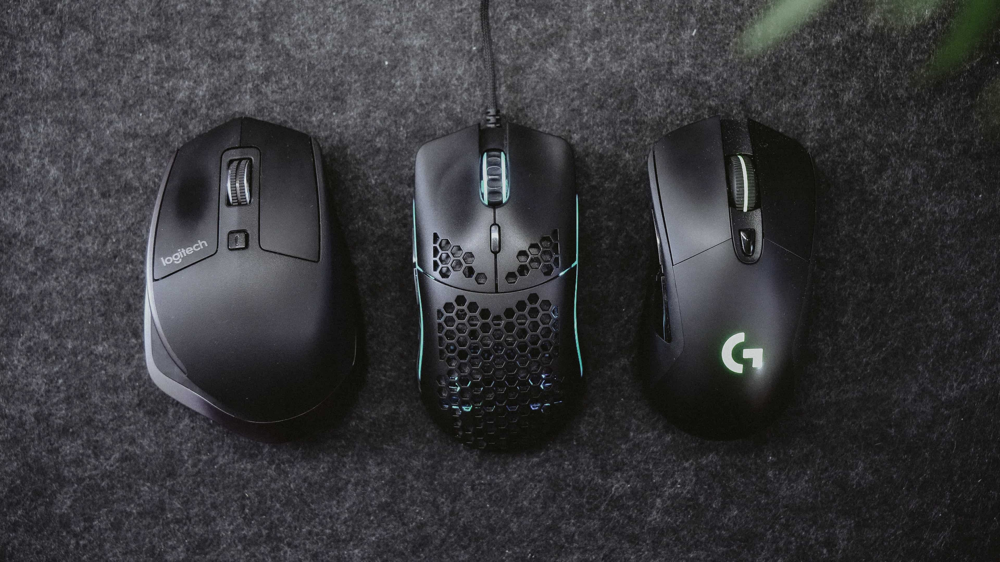

Introducción
El primer ratón fue presentado en 1968 y revolucionó el mundo de la informática. Fue un avance realmente importante para la época ya que permitió el uso de los ordenadores mediante una interfaz gráfica, abriendo con ello la puerta a miles de personas que no poseían los conocimientos necesarios para usar los ordenadores mediante la línea de comandos.
Un ratón es un periférico de entrada que se conecta a los dispositivos informáticos para controlar el cursor de su interfaz gráfica. El cursor se mueve con el desplazamiento del ratón.
El ratón se mueve mediante el movimiento de la muñeca y el brazo, y hacia donde muevas el ratón se moverá el cursor.
Además, un ratón posee generalmente 3 botones. El izquierdo es normalmente el principal y el ordenador interpreta el click de este botón realizando acciones como abrir archivos, carpetas...
El botón derecho es el botón secundario, y sirve para realizar acciones más concretas como abrir determinados menús.
Por último, el ratón también posee una rueda central la cual permite hacer scroll. Esta rueda también es un botón que permite seleccionar un modo fijo de scroll mediante desplazamiento, además de realizar otras funciones.
Tipos de ratones
Ópticos
Ópticos
Los ratones ópticos emiten rayos de luz mediante un LED colocado en su parte inferior. Estos rayos se reflejan en la superficie sobre la que está colocado el ratón. La luz rebota hacia arriba y vuelve a una célula fotoeléctrica o cámara de baja resolución colocada en el interior del ratón. Al mover el ratón, el patrón de la luz reflejada cambia y una lente magnifica esta luz para saber con precisión hacia donde ha sido desplazado el ratón.
Láseres
Láseres
Los ratones láseres funcionan de la misma forma que los ópticos, a diferencia que estos usan un láser infrarrojo que emite rayos invisibles para el ojo humano en lugar de un LED. Esto le otorga ciertas ventajas como mayor precisión, mejor respuesta a movimientos pequeños y mejor funcionamiento en determinadas superficies como el cristal.
Analógicos
Analógicos
Estos ratones son los menos comunes en la actualidad ya que son los que se usaban en los 80, 90 y 2000. Utilizan una esfera que gira con el movimiento del ratón y esta gira unos rodillos que reconocen la dirección del movimiento. Estos presentan claras desventajas frente a los otros dos tipos vistos como menor precisión, más peso. También tienden a atascarse y exigen mantenimiento ya que la bola recoge la suciedad.